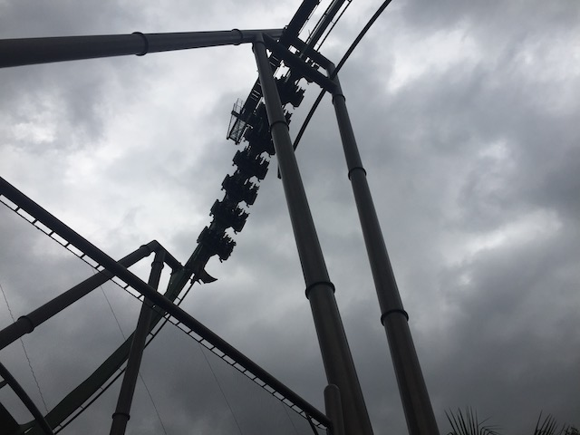
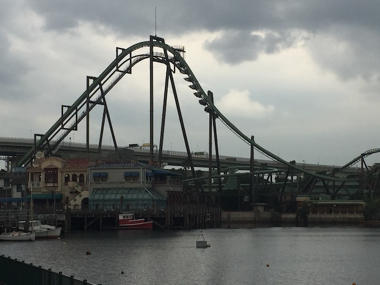

| |
Flying Dinosaur Review

We're here at Universal Studios Japan. Today's ride we'll be reviewing for you is Flying Dinosaur. Not only is this the star attraction of Universal Studios Japan and the biggest coaster in the park, but it's unquestionably the best B&M Flyers, one of their best coasters, and just a really amazing thing. So yeah. Let's get riding. After waiting in a huge line, you get in the seat, pull down the rubber vest, go into flying position, and away we go! We roll out of the station, and begin climbing the lifthill. Looking around, you get not only a good view of Universal Studios Japan, but Osaka in general. We reach the top before heading down the first drop. It's a pretty good first drop. Definetly the steepest drop on any Flying Coaster. And it gets us a decent amount of speed pretty quickly. But on Flying Dinosaur, we're just getting started. We then head up and go into.....I don't know what this is called. I know it's technically an inline twist, followed by a lie to fly followed by an Inside Raven Turn. I've thought about calling it a 540 Degree Roll with Half a Pretzal Loop. But really, I've just been calling this part of the ride CRAZY!!!! Cause HOLY SH*T!!! Regular Inline Twists are fun enough already. But when you have half of one right afterwards, it catches you off guard and then you shout "HOLY SH*T!!! WE AREN'T SUPPOSED TO BE FLIPPING THIS MUCH IN THIS SHORT OF TIME!!!" So you not only are flipping like crazy, you get spat out on your back, pull a ton of Gs, and then just pull back up half a pretzal loop. One of the most intense moments of any Flying Coaster, and honestly, one of the most intense elements period. And it's not even over. What goes well right after a crazy element like that? A FREAKING PRETZAL LOOP!!! Yep. We go right from the Crazy Element straight into another pretzal loop. Not only is it another really intense element right after another really intense element that gives you a lot of Gs, but this is definetly one of the more intense pretzal loops. Also, the bottom of this pretzal loop is a tunnel. Nice little touch that I really like. So between a good steep first drop, "CRAZY!!!!", and a strong pretzal loop, Flying Dinosaur just keeps topping itself and is off to a great start! Can it top itself even more? Spoiler alert: No. But that's only because it started out so strong and has such a high bar to top. The rest of the ride is still really fun. So let's keep going. We drop out of the pretzal loop and into a small bunny hop. Hey look! There's actually some airtime here! Nothing strong or crazy, but still! A legit pop of airtime on a B&M Flyer. We soar over the path, and head straight into an inline twist. Nothing insane or crazy, but these still are really fun elements. We head right from that into a downward helix. We gain some speed, get a nice view of the Jurassic area, and just have a lot of fun here. We head down a small dip, go through another inline twist, this one at faster speeds and having a bit more whip before we glide right into the brake run. GOD DAMN!!! SO GOOD!!! SO F*CKING GOOD!!! That first drop, "CRAZY!!!!", and Pretzal Loop beginning are just so intense and so good. It's almost like B&M specifically made this coaster as a middle finger to everyone who's been complaining that all the new B&Ms are forceless and aren't any good. Cause that right there is some of B&Ms best work. Easily their best flyer, the best coaster to ever be in a Universal Park, andaone of the best coasters in Japan. I can not recommend this ride strongly enough. You will not be dissapointed.
9/10
Location: Universal Studios Japan
Opened: 2016
Built by: B&M
Last Ridden: October 29, 2018
Flying Dinosaur Photos




Home
|